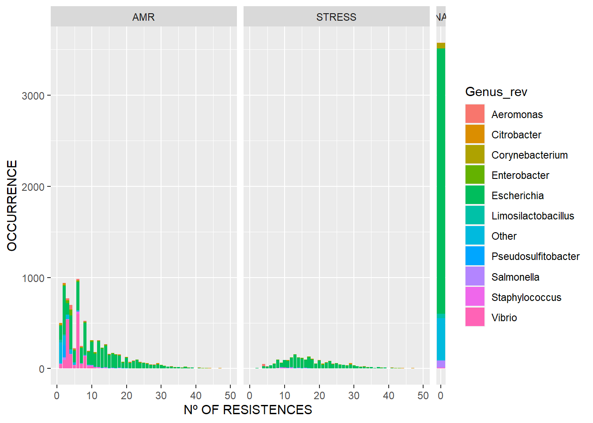

Warning: package 'ggh4x' was built under R version 4.3.3AMRfinder
Files
Los archivos usados son los resultados obtenidos con el script amrfinder.py y un compendio de datos sobre todos los genomas disponibles, del cuál solo nos interesa sus datos taxonómicos y su ID.
data_amrf <- read.csv("AMRfinder_output.csv", sep="\t", stringsAsFactors = F)
pipolin_summary <- read_tsv("pipolin_summary_new.tsv")
taxonomy_data <- pipolin_summary[,c(3,34,38:44)]
rm(pipolin_summary)Obtaining the Genome_ID
Los datos del Genome_ID se pueden obtener de los hits de cada genoma. Para extraer sólo cierta parte de una string podemos usar la función str_extract() del paquete stringr.
data_amrf_new <- data_amrf
data_amrf_new$Genome_ID<-NA
data_amrf_new$Genome_ID<-stringr::str_extract(string = data_amrf_new$Protein.identifier, pattern = "G_[0-9]+")
data_amrf_new <- data_amrf_new[,c(19,1,2,3,4,5,6,7,8,9,10,11,12,13,14,15,16,17,18)]
data_amrf_merge <- merge(data_amrf_new, taxonomy_data, by="Genome_ID")
data_amrf_filtered <- distinct(data_amrf_merge, Genome_ID, Class)
data_amrf_filtered_merged <- merge(data_amrf_filtered, taxonomy_data, all.x = T)
data_amrf_filtered_merged <- unique(data_amrf_filtered_merged)
data_amrf_filtered_merged <- data_amrf_filtered_merged %>%filter(!is.na(class))Counting the occurrence of resistences
Nos interesa saber la cantidad de genomas que tienen 0, 1, 2, 3, etc. resistencias. Para ello hacemos un df con todos los genomas y hacemos un merge con la información taxonómica. Si el merge lo hacemos según Genome_ID nuestro plot no mostrará la cantidad de genomas que no tienen resistencia. Para mostrar también estos últimos, el merge lo haremos según el data frame que contiene la información taxonómica.
Genome_amrf_name <- as.vector(names(table(data_amrf_new$Genome)))
Genome_amrf_count <- as.vector(table(data_amrf_new$Genome))
df_amrf_genome <- data.frame(Genome_amrf_name,Genome_amrf_count)
df_amrf_genome <- distinct(df_amrf_genome)
names(df_amrf_genome) <- c("Genome_ID","Count")
df_temp <- data.frame(taxonomy_data$Genome_ID, taxonomy_data$Genus_rev)
df_temp <- distinct(df_temp)
names(df_temp) <- c("Genome_ID","Genus_rev")
df_type <- data.frame(data_amrf_new$Genome_ID, data_amrf_new$Element.type)
df_type <- unique(df_type)
names(df_type) <- c("Genome_ID","Error_type")
df_amrf_genome2 <- merge(df_amrf_genome, df_temp, by="Genome_ID")
df_amrf_genome2 <- merge(df_amrf_genome2, df_type, by="Genome_ID")
df_amrf_genome3 <- merge(taxonomy_data, df_amrf_genome2, all.x = T)
df_amrf_genome3$Count[which((grepl("[0-9]+", df_amrf_genome3$Count)==F))]<-0Plots
El primer gráfico muestra la frecuencia relativa de presencia de cierta resistencia, coloreada según pertenencia a los géneros más relevantes de bacterias y dividido por clase taxonómica.
#Percentage of Resistence found in relevant Genus
ggplot(data_amrf_filtered_merged, aes(x=Class)) +
geom_bar(aes(y = after_stat(count)/11430, fill = Genus_rev, alpha=0.1), stat = "count", col = "black", alpha = 0.6) +
facet_grid(.~class, scale="free_x",space="free") + scale_y_continuous(labels=scales::percent) + xlab("RESISTENCE") + ylab("Relative Freq") +
theme(axis.text.x = element_text(angle = 45, hjust = 1, size = 5, face = "bold"))El segundo muestra qué cantidad de genomas tienen x número de resistencias, sólo para genomas que tengan al menos una.
#nº of Resistences (without Nulls)
ggplot(df_amrf_genome2, aes(Count, fill=Genus_rev)) + geom_bar(stat="count") +
facet_grid(.~Error_type, scale="free_x",space="free") +
xlab("Nº OF RESISTENCES") + ylab("OCCURRENCE")El tercero muestra qué cantidad de genomas tienen x número de resistencias, incluyendo aquellos que no presentan ninguna. Para ajustar el tamaño de los grids podemos usar ggh4x::force_panelsizes(cols=c()).
#nº of Resistences (with Nulls)
ggplot(df_amrf_genome3[df_amrf_genome3$Count<50,], aes(Count, fill=Genus_rev)) + geom_bar(stat="count") +
facet_grid(.~Error_type,scale = "free_x") + force_panelsizes(cols = c(20,20,1)) +
xlab("Nº OF RESISTENCES") + ylab("OCCURRENCE") + scale_x_continuous(breaks = c(0,10,20,30,40,50))
Session Info
R version 4.3.2 (2023-10-31 ucrt)
Platform: x86_64-w64-mingw32/x64 (64-bit)
Running under: Windows 11 x64 (build 22631)
Matrix products: default
locale:
[1] LC_COLLATE=Spanish_Spain.utf8 LC_CTYPE=Spanish_Spain.utf8
[3] LC_MONETARY=Spanish_Spain.utf8 LC_NUMERIC=C
[5] LC_TIME=Spanish_Spain.utf8
time zone: Europe/Madrid
tzcode source: internal
attached base packages:
[1] stats graphics grDevices utils datasets methods base
other attached packages:
[1] ggh4x_0.2.8 lubridate_1.9.3 forcats_1.0.0 stringr_1.5.1
[5] dplyr_1.1.4 purrr_1.0.2 readr_2.1.4 tidyr_1.3.0
[9] tibble_3.2.1 tidyverse_2.0.0 ggplot2_3.4.4
loaded via a namespace (and not attached):
[1] bit_4.0.5 gtable_0.3.4 jsonlite_1.8.8 crayon_1.5.2
[5] compiler_4.3.2 tidyselect_1.2.0 parallel_4.3.2 scales_1.3.0
[9] yaml_2.3.7 fastmap_1.1.1 R6_2.5.1 labeling_0.4.3
[13] generics_0.1.3 knitr_1.45 htmlwidgets_1.6.3 munsell_0.5.0
[17] pillar_1.9.0 tzdb_0.4.0 rlang_1.1.2 utf8_1.2.4
[21] stringi_1.8.2 xfun_0.41 bit64_4.0.5 timechange_0.2.0
[25] cli_3.6.1 withr_2.5.2 magrittr_2.0.3 digest_0.6.33
[29] grid_4.3.2 vroom_1.6.4 rstudioapi_0.15.0 hms_1.1.3
[33] lifecycle_1.0.4 vctrs_0.6.4 evaluate_0.23 glue_1.6.2
[37] farver_2.1.1 fansi_1.0.5 colorspace_2.1-0 rmarkdown_2.25
[41] tools_4.3.2 pkgconfig_2.0.3 htmltools_0.5.7